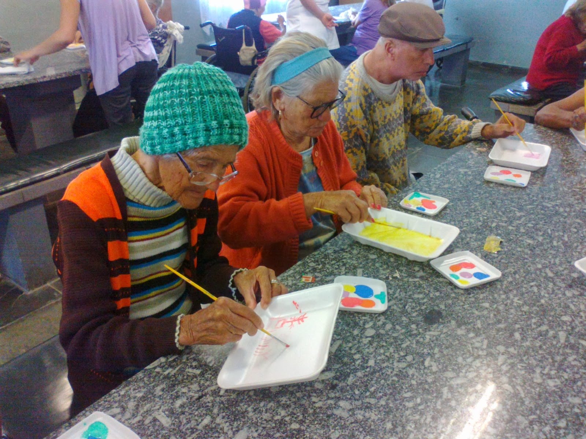

Amigos do Tempo
Atividades recreativas, rodas de conversa e oficinas de arte para promover o bem-estar e o convívio social.
Conheça nossos projetos que buscam oferecer amor, atenção e dignidade aos idosos do Lar da Esperança.
Atividades recreativas, rodas de conversa e oficinas de arte para promover o bem-estar e o convívio social.
Parceria com profissionais de saúde para acompanhamento médico, fisioterapia e orientação nutricional.
Contribua com doações de alimentos, roupas, materiais de higiene ou recursos financeiros para ajudar na manutenção do Lar.
Você pode ser um voluntário ou fazer uma doação para apoiar o Lar da Esperança.
Quero ser Doador ou Voluntário